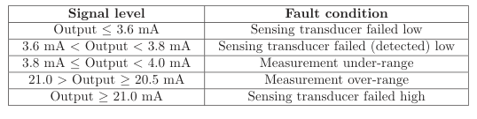

The original, as published: Tony R. Kuphaldt, Lessons In Industrial Instrumentation, NAMUR signal levels. CC BY 4.0, https://creativecommons.org/licenses/by/4.0/. Imported as published, from https://www.ibiblio.org/kuphaldt/socratic/sinst/book/liii.pdf https://www.ibiblio.org/kuphaldt/socratic/sinst/book/liii.pdf
One of the intrinsic benefits of a “live zero” analog signal standard such as 4-20 mA is that a wire break (open fault) can immediately be detected by the absence of current in the circuit. If the signal scale started at zero (e.g. 0-20 mA), there would be no way to electrically distinguish between a broken wire and a legitimate 0% signal value. In other words, the “live” LRV point of a 4-20 mA signal provides us with a way to indicate a certain type of circuit fault in addition to indicating an analog measurement during normal operation. The NAMUR signal standard takes this philosophy one step further by defining specific diagnostic meaning to values of current lying outside the 4-20 mA range:

NAMUR-compliant transmitters are designed to limit their output signals between 3.8 mA and less than 21 mA when functioning properly. Signals lying outside this range indicate some form of failure has occurred within the transmitter or the circuit wiring. NAMUR-compliant control systems will recognize these errant milliamp values as fault states, and may be programmed to take specific action upon receiving these signal values. Such actions include forcing controllers into manual mode, initiating automatic shutdown procedures, or taking some other form of safe action appropriate to the knowledge of a failed process transmitter.
916